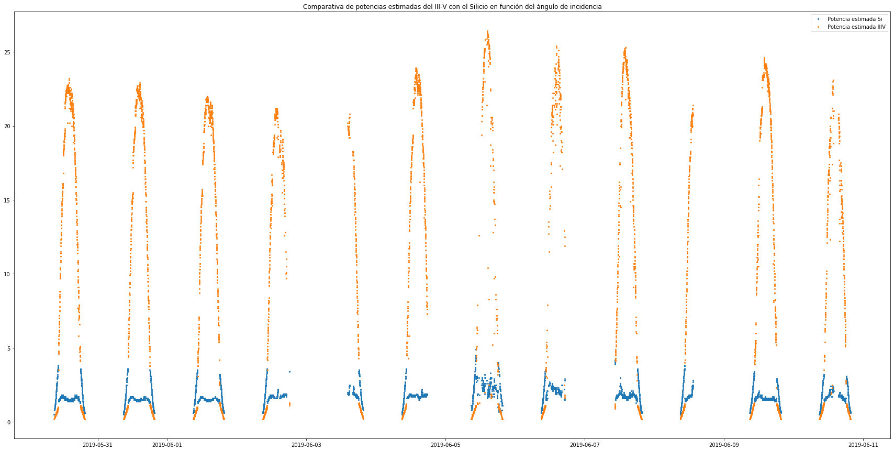
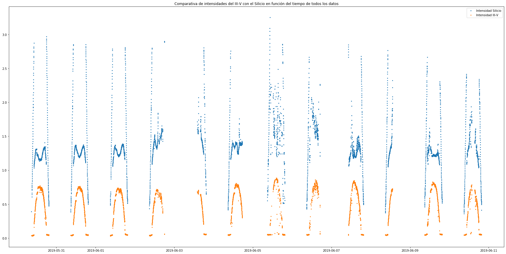
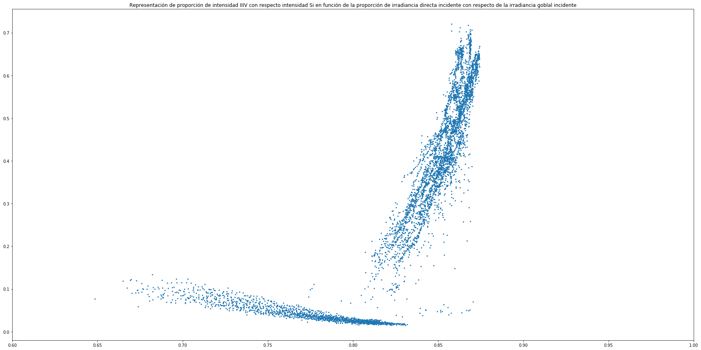
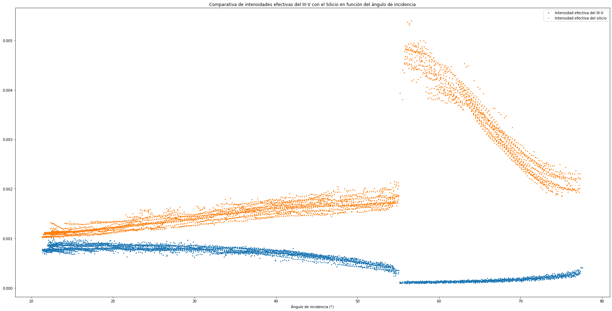

Python 3.7.4 (default, Aug 9 2019, 18:34:13) [MSC v.1915 64 bit (AMD64)]
Type "copyright", "credits" or "license" for more information.
IPython 7.8.0 -- An enhanced Interactive Python.
In [1]: runfile('C:/Users/juanj/OneDrive/Escritorio/repositorio_tfg/Union_IIIV_Si.py', wdir='C:/Users/juanj/OneDrive/Escritorio/repositorio_tfg')
C:\Users\juanj\Anaconda3\lib\site-packages\pandas\plotting\_matplotlib\converter.py:103: FutureWarning:
Using an implicitly registered datetime converter for a matplotlib plotting method. The converter was registered by pandas on import. Future versions of pandas will require you to explicitly register matplotlib converters.
To register the converters:
>>> from pandas.plotting import register_matplotlib_converters
>>> register_matplotlib_converters()




In [2]: